Master the real mental model of Matplotlib: Figure canvas, Axes plotting areas, Axis coordinate rulers, and the powerful Object-Oriented interface for building enterprise dashboards.
Matplotlib mein Figure sabse top-level container hota hai. Isko real life ke ek Wooden Notice Board ya Blank Painting Canvas ki tarah samjho. Canvas khud koi line ya bar graph draw nahi karta, balki yeh ek outer boundary provide karta hai jiske upar tum ek ya multiple graphs (Axes) paste kar sakte ho.
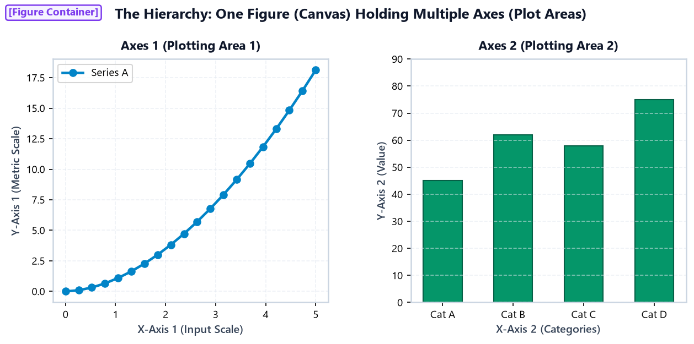
figsize & dpiplt.figure() call karke tum canvas ki physical width, height, background color aur resolution configure kar sakte ho:
figsize=(width, height): Canvas ka size inches mein define karta hai. E.g. (10, 5) means 10 inches wide aur 5 inches tall.dpi=...: Dots Per Inch. Screen rendering ke liye 100–150 DPI best hota hai; high-res print publications ke liye 300 DPI use hota hai.facecolor=...: Outer figure canvas ka background color set karta hai.import matplotlib.pyplot as plt # Monthly Pocket Money Savings Scenario (6 Months) months = ['Jan', 'Feb', 'Mar', 'Apr', 'May', 'Jun'] savings = [1200, 1500, 1800, 1400, 2200, 2600] # 1. Canvas create karo: 9 inches wide x 4.5 inches tall with 150 DPI plt.figure(figsize=(9, 4.5), dpi=150, facecolor='#f8fafc') plt.plot(months, savings, color='#0284c7', marker='o', linewidth=2.5) plt.title('Student Monthly Pocket Money Savings Trend', fontsize=13, fontweight='bold') plt.xlabel('Month', fontsize=11) plt.ylabel('Savings Amount (₹)', fontsize=11) plt.grid(True, linestyle='--', alpha=0.5) plt.show()
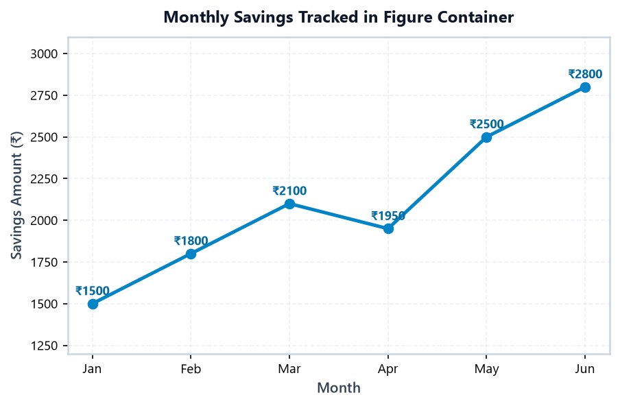
Alag-alag screen sizes ke liye sahi aspect ratio select karna crucial hota hai:
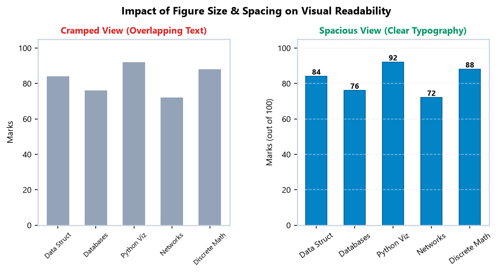
Beginners aksar Axes (plural spelling) aur Axis (singular) mein confuse ho jate hain. Dono mein zameen-aasmaan ka farq hai:
| Feature | Figure | Axes (Plural) | Axis (Singular) |
|---|---|---|---|
| Analogy | Complete Notice Board | Sheet of graph paper pinned on board | The marked ruler measuring cm/inches |
| Contains | All Axes, Suptitles, Canvas | Lines, Bars, Ticks, Labels, Legend | Tick marks, Tick labels, Min/Max limits |
| Code Object | fig = plt.figure() |
ax = fig.add_subplot() |
ax.xaxis / ax.yaxis |
| Quantity | 1 per image file | 1, 2, 4, or 16 per Figure | 2 (X and Y) per 2D Axes |
Jab hum ax.set_title() aur ax.set_xlabel() call karte hain, toh hum directly usi specific Axes object ko customize kar rahe hote hain:
import matplotlib.pyplot as plt days = ['Mon', 'Tue', 'Wed', 'Thu', 'Fri', 'Sat', 'Sun'] hours = [2.5, 3.5, 2.0, 4.0, 4.5, 6.0, 5.0] fig, ax = plt.subplots(figsize=(8.5, 4.5), dpi=150) ax.plot(days, hours, color='#059669', marker='s', linewidth=2.5, label='Study Hours') ax.axhline(3.5, color='#d97706', linestyle='--', label='Target (3.5h)') ax.set_title('Weekly Student Study Hours vs Daily Target', fontsize=12, fontweight='bold') ax.set_xlabel('Day of the Week', fontsize=10.5) ax.set_ylabel('Hours Invested', fontsize=10.5) ax.set_ylim(0, 7) ax.grid(True, linestyle='--', alpha=0.5) ax.legend(loc='upper left') plt.show()
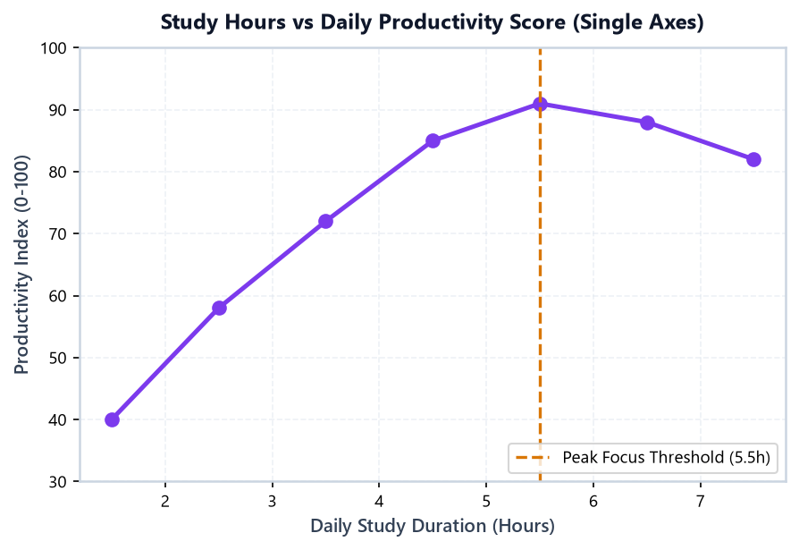
ax object with reference target line.IoT sensors se aane wale continuous time-series data ko plot karne ke liye Axes object ke X aur Y limits ko precise control karna padta hai:
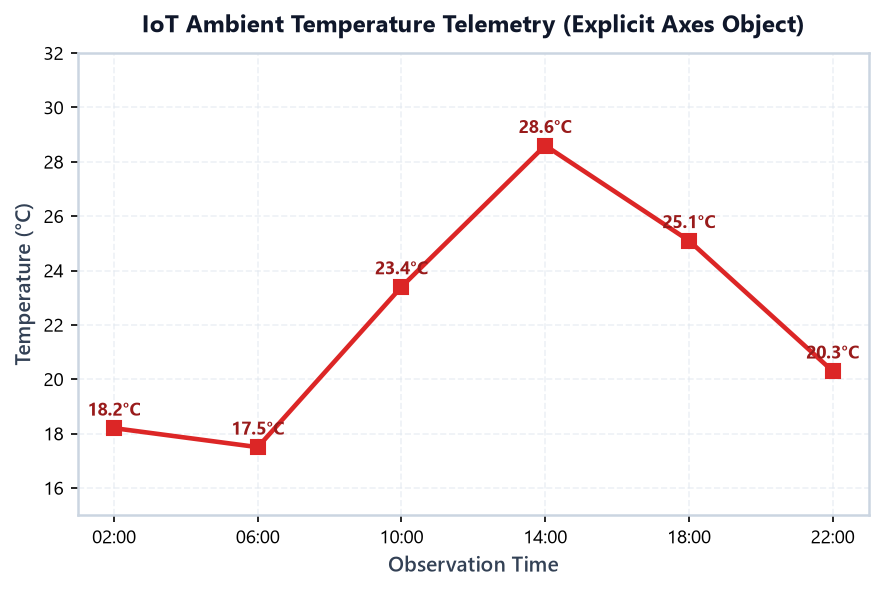
plt.subplots()Topic 2 mein humne plt.plot() aur plt.title() use kiya tha. Wo tha pyplot state-machine interface. Small exploratory scripts ke liye wo theek hai, lekin professional software engineering aur multi-plot dashboards mein Object-Oriented (OO) Interface use kiya jata hai.
Pyplot State-Machine (plt.xxx) |
Object-Oriented Approach (ax.xxx) |
Why OO is Superior? |
|---|---|---|
plt.title('My Title') |
ax.set_title('My Title') |
Explicit pata hota hai kaunse subplot ka title set ho raha hai. |
plt.xlabel('X Axis') |
ax.set_xlabel('X Axis') |
Multi-plot layout mein galat plot label hone ka risk 0 ho jata hai. |
plt.xlim(0, 10) |
ax.set_xlim(0, 10) |
Har plot ki scaling completely independent rahti hai. |
plt.grid(True) |
ax.grid(True) |
Ek plot par grid on aur doosre par off rakhna transparent hota hai. |
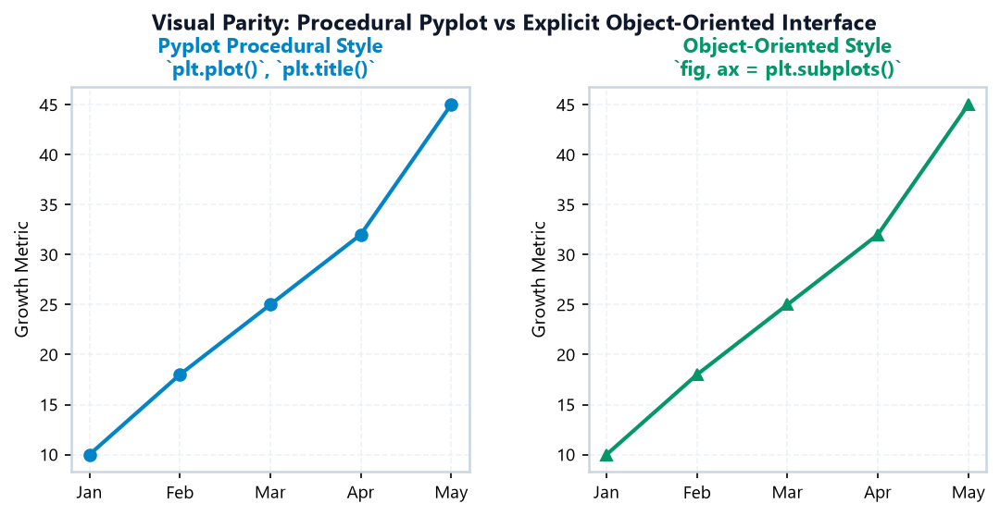
fig, ax = plt.subplots()fig: Complete Figure window/canvas.ax: Ek ready-to-use Axes plotting area.
Ek screen par multiple plots arrange karne ke liye hum plt.subplots(nrows, ncols) use karte hain. nrows batata hai kitni rows hongi, aur ncols batata hai kitne columns honge.
College marks aur study hours ko side-by-side compare karne ke liye nrows=1, ncols=2 sabse best choice hai:
import matplotlib.pyplot as plt subjects = ['Python', 'SQL', 'ML', 'Web Dev'] marks = [88, 76, 92, 81] study_hours = [25, 18, 32, 22] # 1 row, 2 columns -> axes is a 1D NumPy array with 2 elements: [ax1, ax2] fig, (ax1, ax2) = plt.subplots(nrows=1, ncols=2, figsize=(10, 4.5), dpi=150) # Left Plot (Bar chart on ax1) ax1.bar(subjects, marks, color='#0284c7', width=0.5) ax1.set_title('Subject Marks (out of 100)', fontweight='bold') ax1.set_ylabel('Marks') ax1.set_ylim(0, 100) ax1.grid(True, linestyle='--', alpha=0.5) # Right Plot (Line chart on ax2) ax2.plot(subjects, study_hours, color='#7c3aed', marker='o', linewidth=2.5) ax2.set_title('Study Hours Invested', fontweight='bold') ax2.set_ylabel('Total Hours') ax2.grid(True, linestyle='--', alpha=0.5) fig.suptitle('College Academic Performance: Marks vs Effort', fontsize=13, fontweight='bold') fig.tight_layout() plt.show()
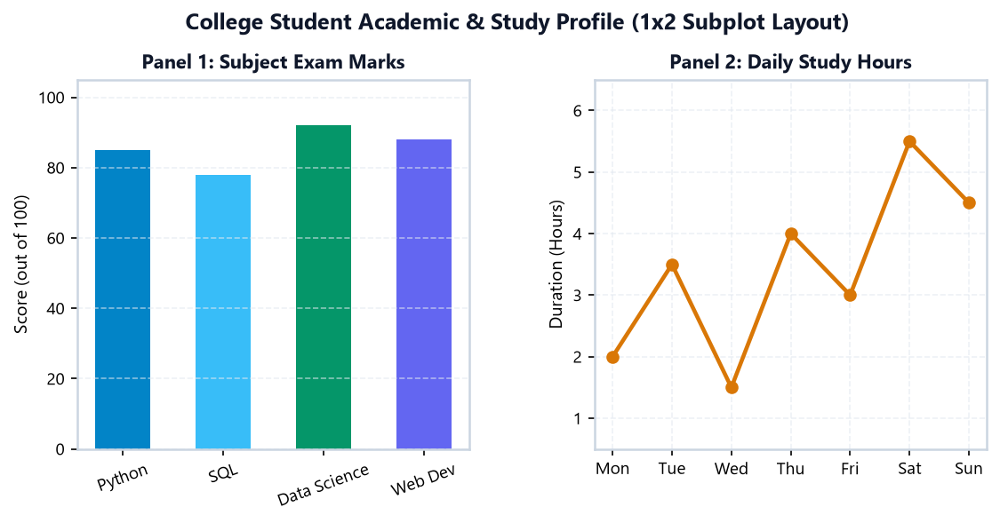
Jab do metrics ka time-axis same ho (jaise hourly website visitors aur server response latency), tab Vertical Stack (2x1) sabse readable hota hai:
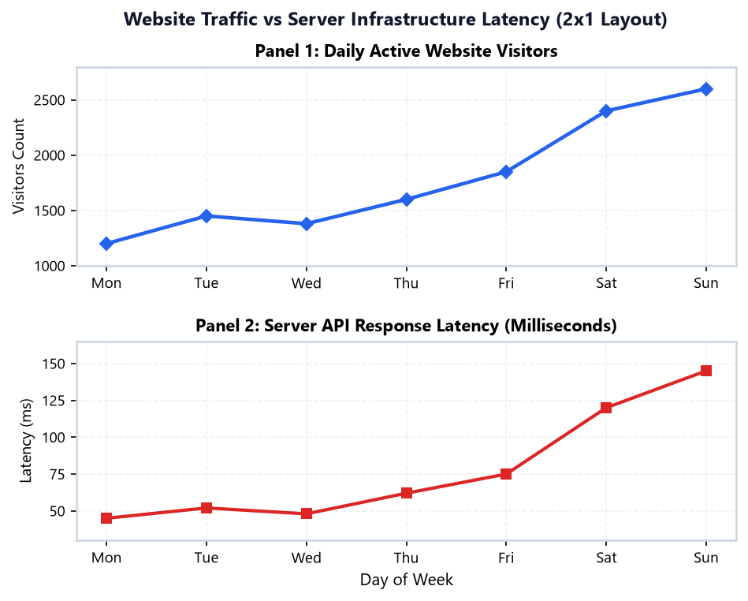
Enterprise applications mein 4 key metrics ko ek 2×2 grid matrix mein dikhaya jata hai. Dhyan rahe, is case mein axes ek 2D NumPy Array ban jata hai:
nrows > 1 aur ncols > 1 ho, tab indexing coordinate system follow karti hai:axes[0, 0]: Top-Left plot (Row 0, Col 0)axes[0, 1]: Top-Right plot (Row 0, Col 1)axes[1, 0]: Bottom-Left plot (Row 1, Col 0)axes[1, 1]: Bottom-Right plot (Row 1, Col 1)axes.flatten() use karke 1D array mein convert kar sakte ho!
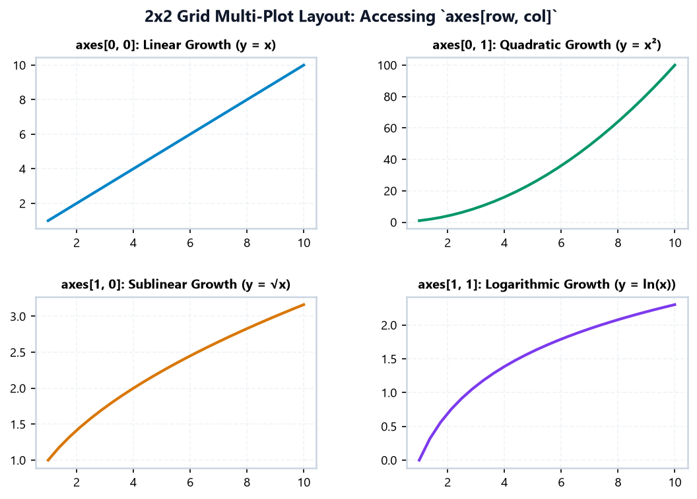
axes[row, col].Object-Oriented API ka sabse bada benefit ye hai ki har ax object apne aap mein independent world hota hai. Ek subplot par bar chart draw karo, doosre par line chart, teesre par horizontal bar, har ek ka apna title, colors, scales, aur grid lines ho sakte hain.
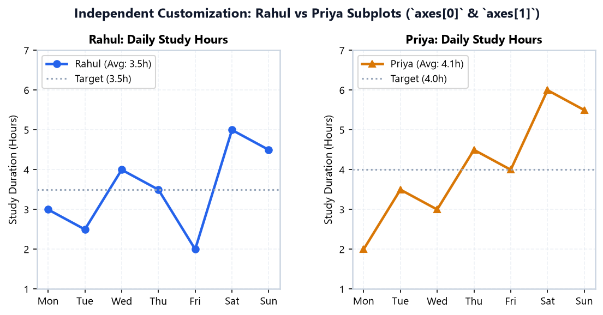
Jab hum do related metrics ko alag-alag view mein observe karte hain, tab har Axes ka limit independently tune kiya ja sakta hai:
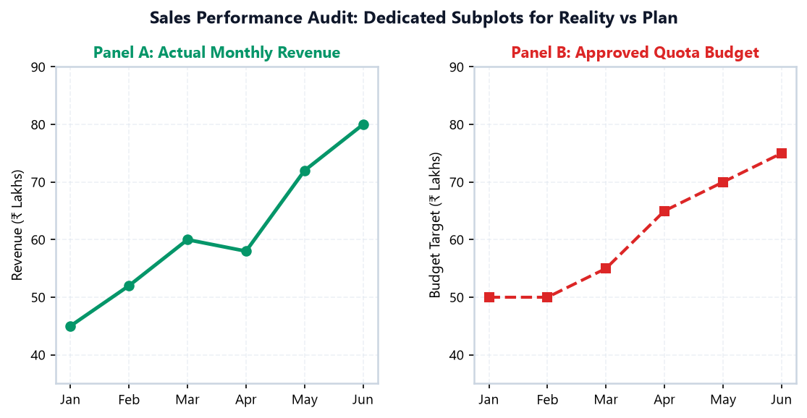
Jab multiple subplots banaye jate hain, toh do major visual issues aate hain:
fig.suptitle() vs ax.set_title()fig.suptitle('Super Title', fontsize=14): Poore canvas ka overall high-level heading hota hai.ax.set_title('Subplot Title', fontsize=11): Sirf us particular Axes ka individual heading hota hai.fig.tight_layout() & fig.subplots_adjust()fig.tight_layout() Matplotlib ka built-in layout engine hai jo automatic margins aur padding adjust karta hai taaki koi bhi text clip na ho:
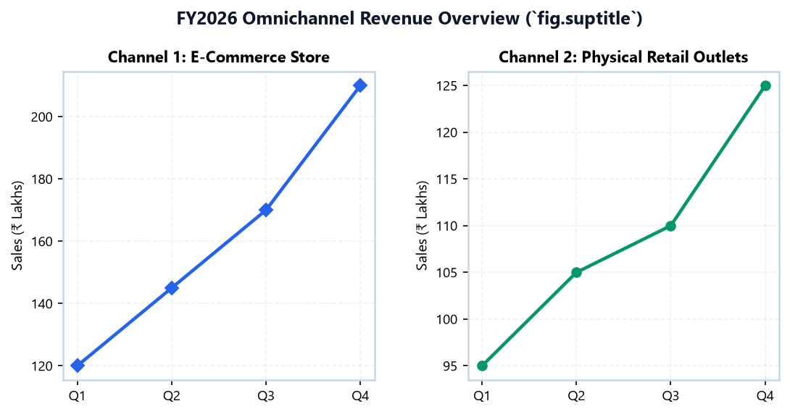
fig.suptitle() at the top, supported by clean individual ax.set_title() headings.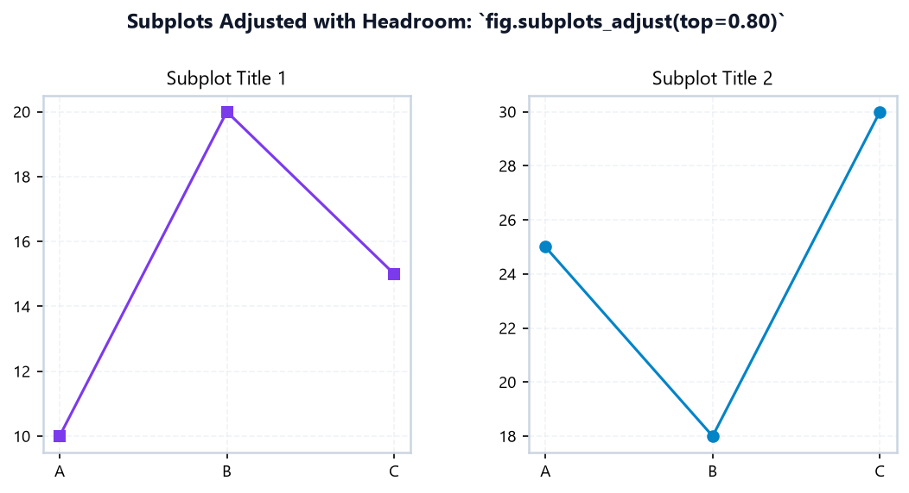
fig.tight_layout().fig.suptitle() aur top subplots ke beech mein thoda extra room chahiye, toh fig.tight_layout(rect=[0, 0, 1, 0.95]) use karo! Yeh canvas ke top 5% space ko exclusively suptitle ke liye reserve kar deta hai.
sharex=True & sharey=TrueJab do subplots related data show kar rahe hon, toh unka axis scale share karna visual honesty aur clarity ke liye critical hota hai.
sharex=True)Agar dono graphs ka time scale same hai (jaise Daily Temperature aur Daily Humidity), toh X-axis labels ko repeat karne ki zaroorat nahi hoti. sharex=True lagane se sirf bottom plot par X tick labels aate hain aur dono zoom/pan synchronize ho jate hain:
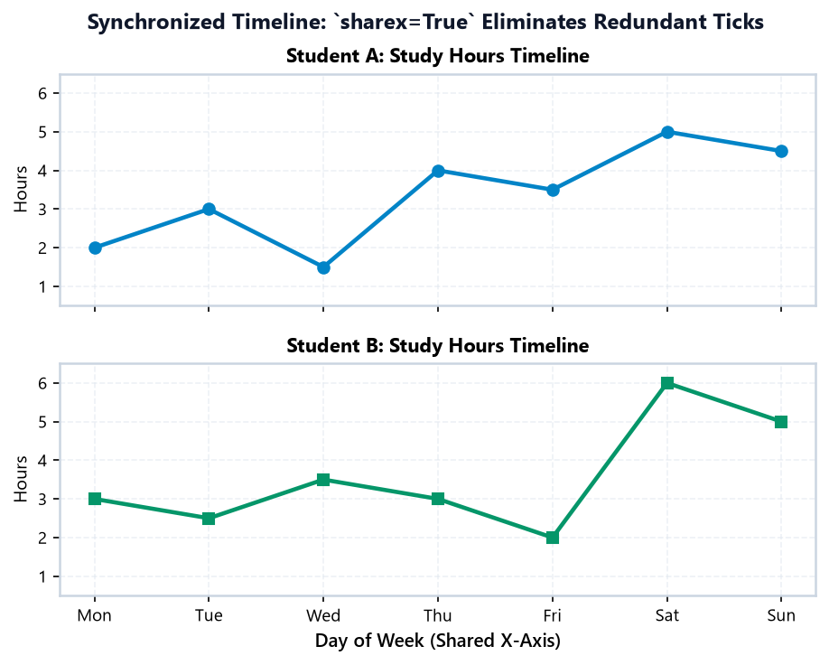
sharex=True: Top panel tracks server CPU load, bottom panel tracks RAM usage on identical timestamps.sharey=True): Fair ComparisonsAgar do branches (Branch Alpha vs Branch Beta) ki monthly sales compare karni ho, aur dono ka Y-axis scale alag ho (jaise ek ka 0–100 aur doosre ka 0–500), toh viewer mislead ho sakta hai. sharey=True dono plots ka Y scale identical lock kar deta hai:
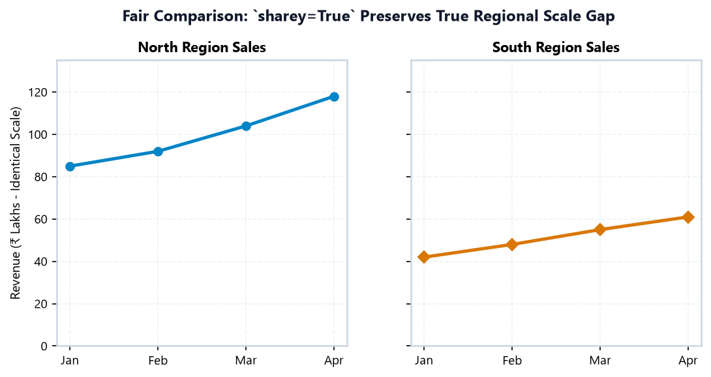
sharey=True: Branch Alpha vs Branch Beta have identical Y-scale (0 to 100 Lakhs), making visual comparison truthful.sharey=True mat lagao! Varna 6 hours ka graph 100 marks ke scale par flat line ban jayega.
Matplotlib beginner se intermediate level par aane ke dauran ye 12 mistakes sabse common hoti hain:
| # | Common Mistake | Bad Code Example | Correct Code & Why |
|---|---|---|---|
| 1 | Mixing plt and ax confusingly |
ax.plot(...) |
ax.set_title('Title') — Pyplot functions active figure par affect karti hain; hamesha explicit ax methods use karo. |
| 2 | Unpacking 2D array incorrectly | fig, (ax1, ax2, ax3, ax4) = plt.subplots(2, 2) — ValueError! |
fig, axes = plt.subplots(2, 2) ya axes.flatten() use karo. |
| 3 | Forgetting fig.tight_layout() |
Multiple plots banaye bina spacing adjustment ke. | Call fig.tight_layout() before plt.show() taaki labels overlap na hon. |
| 4 | Suptitle clashing with plot titles | fig.suptitle('...') without top margin. |
fig.tight_layout(rect=[0, 0, 1, 0.95]) — Top 5% space suptitle ke liye reserve karo. |
| 5 | Writing ax.title('...') instead of ax.set_title() |
ax.title('Title') — TypeError! |
Axes object par method ka naam ax.set_title() hota hai. |
| 6 | Writing ax.xlabel('...') instead of ax.set_xlabel() |
ax.xlabel('Month') — AttributeError! |
Always use setter methods: ax.set_xlabel(), ax.set_ylabel(). |
| 7 | Sharing Y-axis for different units | sharey=True for Marks (0-100) and Hours (0-5). |
Do not share Y-axis when physical data units are fundamentally different. |
| 8 | Calling plt.show() before plt.savefig() |
plt.show() |
Always savefig() first! show() clears the active Figure buffer resulting in blank images. |
| 9 | Hardcoding tiny figsize for 4 subplots |
plt.subplots(2, 2, figsize=(4, 3)) |
Use adequate canvas size like figsize=(12, 8) for 2x2 grids so plots have room to breathe. |
| 10 | Overwriting ax variable in a loop |
for col in data: ax = ... |
Use indexed axes: for i, ax in enumerate(axes.flatten()): ax.plot(...). |
| 11 | Ignoring tick label rotation on crowded categorical axes | 10 subject names horizontal and overlapping. | Use ax.tick_params(axis='x', rotation=30) or ax.set_xticklabels(labels, rotation=30). |
| 12 | Missing bbox_inches='tight' during save |
plt.savefig('dashboard.png') |
Always use bbox_inches='tight' to prevent edge labels from being cut off in exports. |
Aao ek complete, production-grade 3-panel academic dashboard banate hain jisme:
import matplotlib.pyplot as plt # 1. Dataset Preparation subjects = ['Data Struct', 'Databases', 'Python Viz', 'Networks', 'Maths'] exam_scores = [82, 76, 94, 71, 88] attendance_pct = [90, 85, 98, 80, 92] days = ['Mon', 'Tue', 'Wed', 'Thu', 'Fri', 'Sat', 'Sun'] daily_study_hours = [2.5, 3.2, 1.8, 4.5, 3.8, 6.0, 5.2] # 2. Canvas & Grid Setup (2 rows x 2 cols layout) fig = plt.figure(figsize=(10, 6.8), dpi=150) # Subplot 1: Top-Left (Panel A) ax1 = plt.subplot2grid((2, 2), (0, 0)) bars = ax1.bar(subjects, exam_scores, color='#0284c7', width=0.55) ax1.set_title('Panel A: Subject Exam Scores', fontweight='bold') ax1.set_ylabel('Score (out of 100)') ax1.set_ylim(0, 110) ax1.grid(True, linestyle='--', alpha=0.4) ax1.tick_params(axis='x', rotation=25) for b in bars: ax1.text(b.get_x() + b.get_width()/2, b.get_height() + 2, str(b.get_height()), ha='center', fontweight='bold') # Subplot 2: Top-Right (Panel B) ax2 = plt.subplot2grid((2, 2), (0, 1)) ax2.plot(days, daily_study_hours, color='#059669', marker='o', linewidth=2.5) ax2.axhline(3.5, color='#d97706', linestyle='--', label='Target (3.5h)') ax2.set_title('Panel B: Weekly Study Effort Curve', fontweight='bold') ax2.set_ylabel('Daily Hours') ax2.set_ylim(1, 7) ax2.grid(True, linestyle='--', alpha=0.4) ax2.legend(loc='upper left') # Subplot 3: Bottom Full-Width (Panel C) ax3 = plt.subplot2grid((2, 2), (1, 0), colspan=2) ax3.plot(subjects, attendance_pct, color='#7c3aed', marker='s', linewidth=2.5, label='Attendance (%)') ax3.plot(subjects, exam_scores, color='#0284c7', marker='o', linewidth=2.5, linestyle='--', label='Exam Marks (0-100)') ax3.set_title('Panel C: Attendance Correlation Profile Across Curriculum', fontweight='bold') ax3.set_ylabel('Percentage / Score') ax3.set_ylim(60, 105) ax3.grid(True, linestyle='--', alpha=0.4) ax3.legend(loc='lower right') fig.suptitle('Mini Project 1: College Academic Performance Executive Dashboard', fontsize=14, fontweight='bold') fig.tight_layout(rect=[0, 0, 1, 0.96]) plt.savefig('college_dashboard.png', dpi=150, bbox_inches='tight') plt.show()
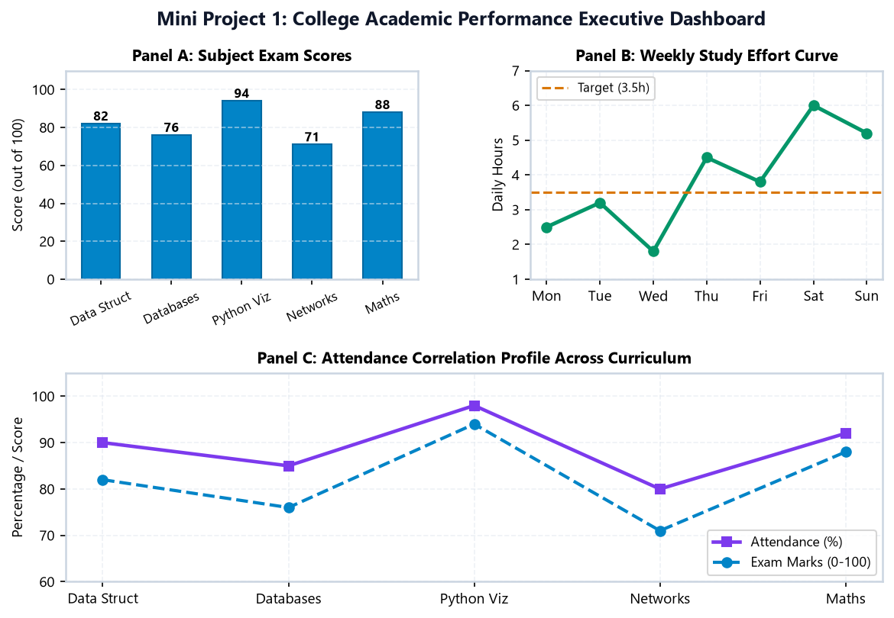
Real-life tech companies mein daily operations monitor karne ke liye metrics ko synchronized 2×2 grid mein track kiya jata hai. Is dashboard mein hum 4 core dimensions monitor karenge:
import matplotlib.pyplot as plt days = ['Mon', 'Tue', 'Wed', 'Thu', 'Fri', 'Sat', 'Sun'] visitors = [12500, 14200, 13800, 15900, 18400, 24500, 22100] orders = [420, 490, 460, 580, 710, 980, 890] latency = [180, 195, 175, 210, 240, 310, 280] revenue = [2.4, 2.9, 2.7, 3.5, 4.2, 6.1, 5.4] fig, axes = plt.subplots(2, 2, figsize=(11, 7.5), dpi=150) # Plot 1: Visitors [0, 0] axes[0, 0].plot(days, visitors, color='#0284c7', marker='o', linewidth=2.2) axes[0, 0].set_title('1. Daily Store Visitors', fontweight='bold') axes[0, 0].set_ylabel('Unique Visitors') axes[0, 0].grid(True, linestyle='--', alpha=0.4) # Plot 2: Orders [0, 1] axes[0, 1].bar(days, orders, color='#059669', width=0.5) axes[0, 1].set_title('2. Checkout Orders Completed', fontweight='bold') axes[0, 1].set_ylabel('Total Orders') axes[0, 1].grid(True, linestyle='--', alpha=0.4) # Plot 3: Latency [1, 0] axes[1, 0].plot(days, latency, color='#dc2626', marker='^', linewidth=2.2) axes[1, 0].axhline(250, color='#d97706', linestyle='--', label='SLA (250ms)') axes[1, 0].set_title('3. API Response Latency', fontweight='bold') axes[1, 0].set_ylabel('Latency (ms)') axes[1, 0].grid(True, linestyle='--', alpha=0.4) axes[1, 0].legend(loc='upper left') # Plot 4: Revenue [1, 1] axes[1, 1].plot(days, revenue, color='#7c3aed', marker='s', linewidth=2.2) axes[1, 1].set_title('4. Daily Revenue', fontweight='bold') axes[1, 1].set_ylabel('Revenue (Lakh ₹)') axes[1, 1].grid(True, linestyle='--', alpha=0.4) fig.suptitle('Mini Project 2: E-Commerce Weekly Operations Command Dashboard', fontsize=14, fontweight='bold') fig.tight_layout(rect=[0, 0, 1, 0.96]) plt.show()
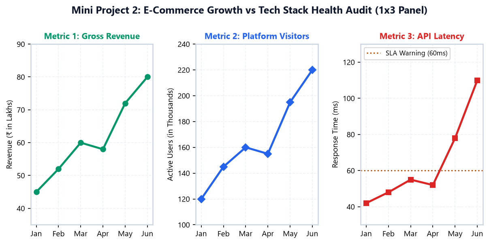
import matplotlib.pyplot as plt days = ['Mon', 'Tue', 'Wed', 'Thu', 'Fri', 'Sat', 'Sun'] steps = [8500, 10200, 9400, 11300, 10800, 14200, 12600] workout_mins = [35, 50, 40, 55, 45, 75, 60] fig, (ax1, ax2) = plt.subplots(1, 2, figsize=(10, 4.5), dpi=150) # Panel 1: Steps Tracker ax1.bar(days, steps, color='#0284c7', width=0.5) ax1.axhline(10000, color='#dc2626', linestyle='--', label='Goal: 10k Steps') ax1.set_title('Daily Walking Steps', fontweight='bold') ax1.set_ylabel('Step Count') ax1.grid(True, linestyle='--', alpha=0.5) ax1.legend(loc='upper left') # Panel 2: Workout Minutes ax2.plot(days, workout_mins, color='#059669', marker='o', linewidth=2.5) ax2.axhline(45, color='#d97706', linestyle='--', label='Goal: 45 Mins') ax2.set_title('Active Workout Duration', fontweight='bold') ax2.set_ylabel('Minutes') ax2.grid(True, linestyle='--', alpha=0.5) ax2.legend(loc='upper left') fig.suptitle('Weekly Smartwatch Health & Activity Tracker', fontsize=13, fontweight='bold') fig.tight_layout(rect=[0, 0, 1, 0.95]) plt.show()
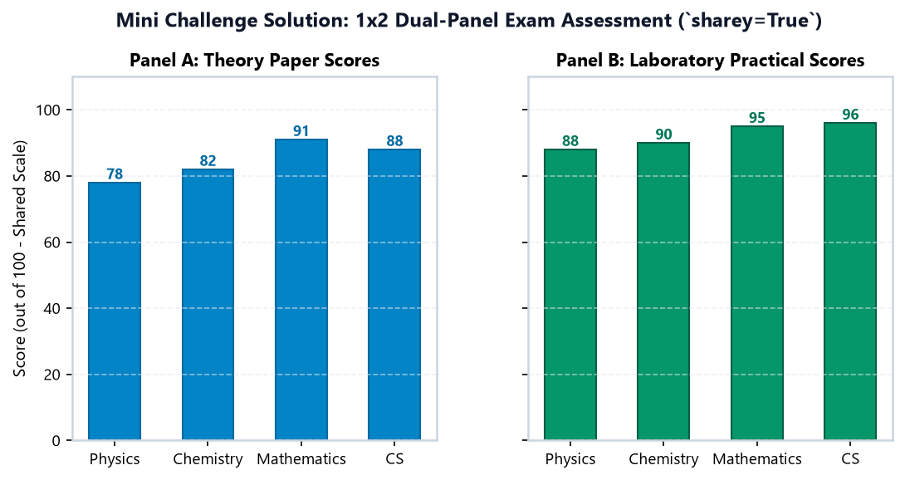
Jab tum Pyplot script ko Object-Oriented code mein convert karte ho, toh ye translation mapping hamesha yaad rakho:
| Task / Operation | Pyplot Interface (plt.xxx) |
Object-Oriented Interface (ax.xxx) |
Notes & Scope |
|---|---|---|---|
| Set Plot Title | plt.title('Title') |
ax.set_title('Title') |
Applies to specific subplot |
| Set Figure Title | plt.suptitle('Title') |
fig.suptitle('Title') |
Canvas-wide master heading |
| Set Axis Labels | plt.xlabel('X') |
ax.set_xlabel('X') |
Specific to each Axes |
| Set Axis Limits | plt.xlim(0, 100) |
ax.set_xlim(0, 100) |
Controls visible range |
| Toggle Grid Lines | plt.grid(True) |
ax.grid(True) |
Independent per Axes |
| Show Legend | plt.legend() |
ax.legend() |
Positioned inside each Axes |
| Draw Horizontal Line | plt.axhline(val) |
ax.axhline(val) |
Useful for target thresholds |
| Draw Vertical Line | plt.axvline(val) |
ax.axvline(val) |
Useful for cutoff dates |
| Auto Space Margins | plt.tight_layout() |
fig.tight_layout() |
Prevents label clipping |
| Save Plot to File | plt.savefig('name.png') |
fig.savefig('name.png') |
Exports high-res graphic |
figsize & dpi).plt.subplots(nrows, ncols) returning fig and axes.fig.tight_layout() to eliminate overlapping labels.
Agli class mein hum line plots aur markers ki complete styling universe explore karenge:
'-'), dashed ('--'), dash-dot ('-.'), and dotted (':').'o'), squares ('s'), triangles ('^'), and diamonds ('D').mec), marker face color (mfc), and marker size (ms).